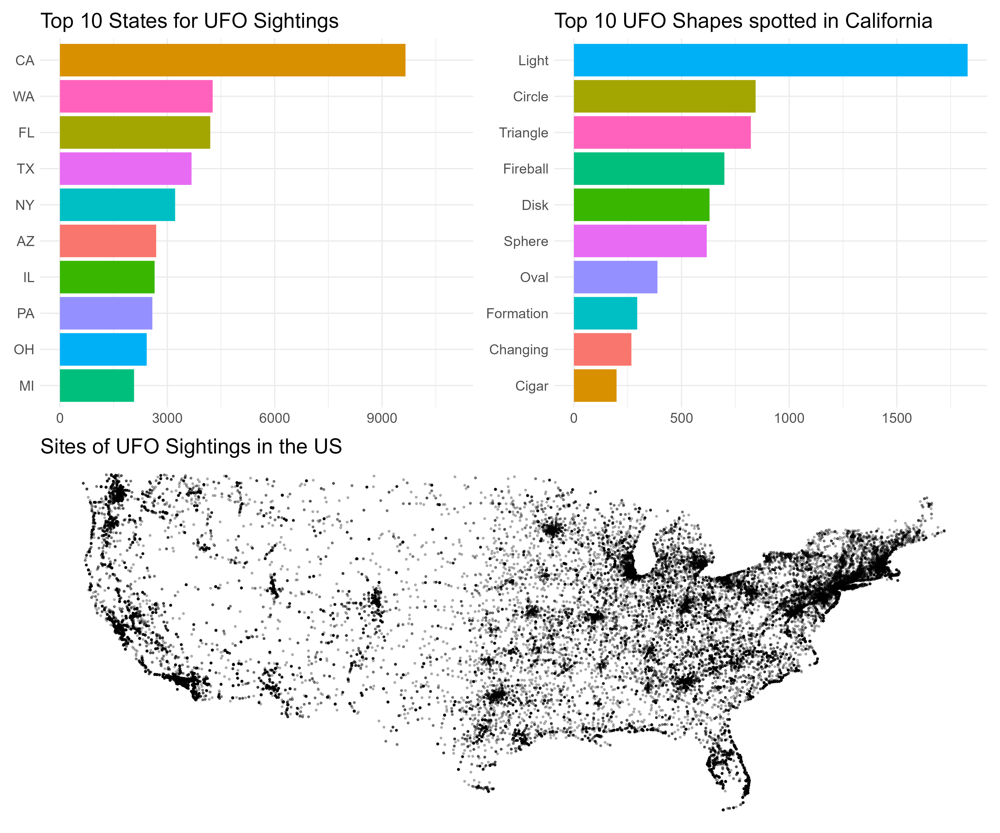

Workshop 2 R and RStudio
2.1 Why R?
In this workshop we will cover the language, R, and RStudio Desktop, the integrated development environment (IDE) that you will use to write reproducible code involving the wrangling, visualization, summary, and statistical modelling of your data. Both R and RStudio Desktop are examples of Open Source Software.
The video below introduces you to R and talks about the importance of adopting such tools in our research analysis workflows.
Below is a video of a great talk by J.J. Allaire, entrepreneur and founder of RStudio (and other organizations). This video is from rstudio::conf 2020 and in it J.J. talks about his journey from being a Political Scientist, how he got involved in R, and the importance of Open Source in the context of Reproducible Data Science. If you click on the image, you’ll be taken to the RStudio website where you can watch the recording. If you’re interested, you might like to look at some of the other videos on the RStudio site.
2.2 Getting Started
In this next video you’ll see how to install R (the language) and RStudio Desktop (the IDE for working with the language). You can download R from here for a variety of platforms including Mac OS, Windows, and Ubuntu. To download free RStudio Desktop just go to here.
If you are using a Chromebook, or have a tablet, or are having difficulties installing R and RStudio Desktop on your computer, you can use Posit cloud to run the RStudio environment in your browser. You’ll need to sign up - there is a free plan available.
2.3 Keeping Things Organised
When you are doing data analysis using R, it’s important to use a sensible structure for your folders and files. As you saw in the video above, creating a new project with a .Rproj file is the easiest way to this is using RStudio Desktop. Good file management is as important as good coding style (which we’ll come to next). There’s a great paper on project management that you can read by clicking the image below.

2.4 Good Coding Style
In the following video you will learn a little about good coding style. It’s important when you’re writing analysis scripts that your code is understandable by others, and by future you. If you get into the habit of good coding style early on, it will make things a lot easier in the long run - and you’ll find it easier to work collaboratively as others will find it easier to work with you.
You can have a look at the helpful Tidyverse Style Guide here.
If you want to make your code and data open (and you really should unless there’s a good reason not to do so), it’s important to license it properly to allow others to (re)use and remix it. It’s often good to use the most permissive license that you can. Some good licenses are the MIT License, and the Creative Commons License CC-BY 4.0.
You can use this handy guide if you need help choosing the right license for your own work.
2.5 Your First R Script
You’re now going to run your first R script. We will create three visualisations of UFO sightings in the US using a database of more than 80,000 UFO sightings over the years. Before you run the code, you will need to install two packages onto your computer - they are tidyverse and patchwork.
Once you have installed the packages, paste the following code into a new R script. Run the code in the same way shown in the video. Does your visualisation look like the one in the video?
library(tidyverse) # load the tidyverse
library(patchwork) # needed to combine our 4 plots at the end
# read in data
ufo_sightings <- read_csv("https://raw.githubusercontent.com/rfordatascience/tidytuesday/master/data/2019/2019-06-25/ufo_sightings.csv")
# plot of top 10 US states with number of sightings in each state
plot1 <- ufo_sightings %>%
filter(!is.na(state)) %>%
mutate(state = str_to_upper(state)) %>%
group_by(state) %>%
tally() %>%
top_n(10) %>%
ggplot(aes(x = reorder(state, n), y = n, fill = state)) +
geom_col() +
coord_flip() +
guides(fill = "none") +
labs(title = "Top 10 States for UFO Sightings",
x = NULL,
y = NULL) +
ylim(0, 11000) +
theme_minimal() +
theme(text = element_text(size = 15))
# work out states within lat and long limits (i.e., exclude Alaska)
tidied_ufo <- ufo_sightings %>%
filter(country == "us") %>%
filter(latitude > 24 & latitude < 50)
# plot all sightings on a map of the US
plot2 <- tidied_ufo %>%
ggplot(aes(x = longitude, y = latitude)) +
geom_point(size = .5, alpha = .25) +
theme_void() +
coord_cartesian() +
labs(title = "Sites of UFO Sightings in the US") +
theme(text = element_text(size = 15))
# plot of top 10 UFO shapes spotted in California
plot3 <- tidied_ufo %>%
filter(state == "ca") %>%
filter(ufo_shape != "other") %>%
filter(ufo_shape != "unknown") %>%
group_by(ufo_shape) %>%
tally() %>%
top_n(10) %>%
mutate(ufo_shape = str_to_title(ufo_shape)) %>%
ggplot(aes(x = reorder(ufo_shape, n), y = n, fill = ufo_shape)) +
geom_col() +
coord_flip() +
guides(fill = "none") +
labs(title = "Top 10 UFO Shapes spotted in California",
x = NULL,
y = NULL) +
theme_minimal() +
theme(text = element_text(size = 15))
# Put plots together
my_plot <- (plot1 + plot3) / (plot2)
ggsave("ufo_plot.jpg", plot = my_plot, width = 12, height = 10)